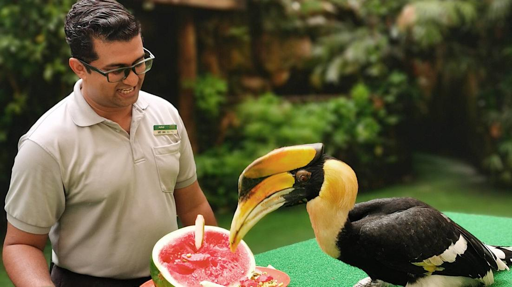
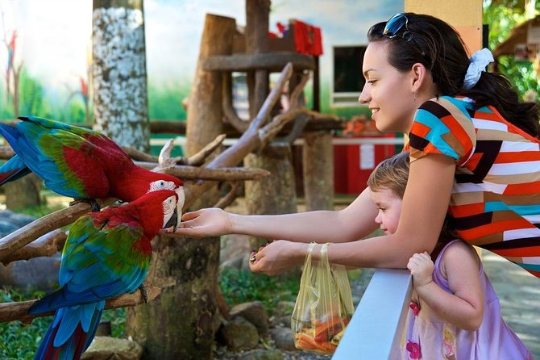
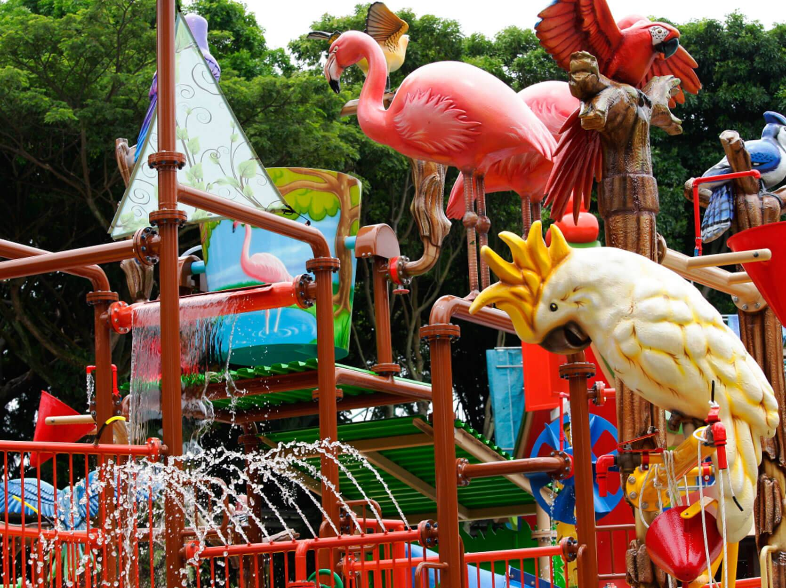
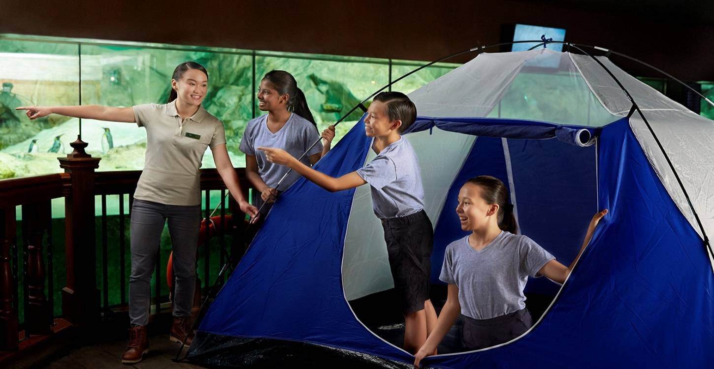

About Activities Ticket Prices Map Location
Opened in 1971, Jurong Bird Park is Asia’s largest bird park, offering a 20.2-hectare hillside haven for close to 3,500 birds across 400 species.
The bird park is famed for its large and immersive walk-in aviaries such as Lory Loft and the recently revamped Waterfall Aviary. Other unique exhibits include Penguin Coast and Pelican Cove.
Committed towards conservation, the bird park is the first in the world to breed the Malayan black hornbill (1995) and the twelve-wired bird of paradise (2001) in captivity.

Wildlife Tours - Hosted by friendly bird keepers.

Feed the Animals - Catch the birds during feeding sessions and get to feed the birds yourself!

For Kids - There are many fun activities from a watery playground to uncovering an extensive egg collection and more!

Camps - Encourage kids to explore with self-learning opportunities, team-bonding activities as well as unique insights into wildlife.
| Age group | Admission ticket price |
|---|---|
| Adult/Youth | S$ 32 |
| Child | S$ 21 |
| Senior citizen | S$ 15 |